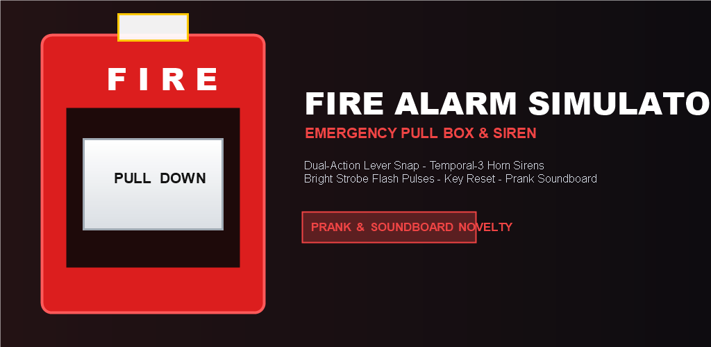
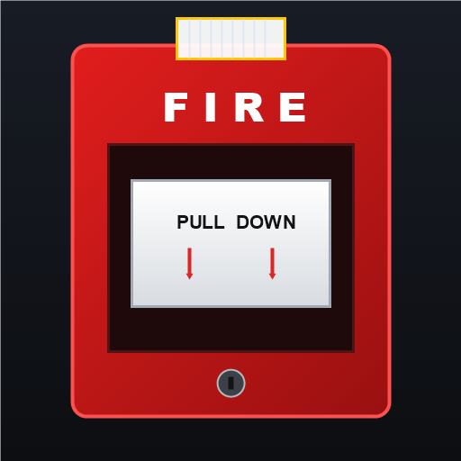

Effective Date: November 2, 2026
This Privacy Policy outlines the privacy practices of the development team for Fire Alarm Simulator ("we," "our," or "the application"). We respect your fundamental right to privacy and are committed to ensuring a completely safe, secure, and transparent user experience.
Fire Alarm Simulator is designed as an interactive offline novelty sound simulation app for entertainment, safe educational exploration of emergency pull stations, and soundboard effects. The application operates 100% locally on your device without transmitting, collecting, or processing user data across external servers.
We collect zero personally identifiable information (PII).
Fire Alarm Simulator does NOT collect, store, monitor, sell, or transmit any user information whatsoever. Specifically, we do NOT collect:
Any configuration preferences set within the application (such as sound mode selection, strobe effect toggle, or haptic vibration toggle) are retained only temporarily in local device memory to sustain your interactive session and are never transmitted elsewhere.
Fire Alarm Simulator requires zero dangerous runtime permissions. The only hardware interaction requested is:
The app does NOT request camera, contacts, SMS, phone state, GPS location, or external storage access.
Fire Alarm Simulator contains no third-party tracking libraries, advertising SDKs, analytics frameworks, or external telemetry systems. Because no third-party code is included, no third party has access to any information regarding your device or usage.
Fire Alarm Simulator is suitable for general audiences and adheres strictly to the Children's Online Privacy Protection Act (COPPA) as well as global child privacy standards.
Because the app does not collect, track, or share any personal information whatsoever, children can safely explore the interactive mechanical simulation without any risk of personal data capture or transmission.
Because we do not collect or store personal data on any server, there is no personal data retained to delete. If you uninstall the application, all locally saved preferences and application cache files are completely and permanently removed by your operating system.
We prioritize security by implementing an offline-first, client-only architecture. Because no network connections are initiated and no user data is collected, the application is inherently safeguarded against remote data leaks and interception vulnerabilities.
We may update this Privacy Policy from time to time to reflect operational, legal, or regulatory modifications. Any updates will be published on this page with a revised effective date. Your continued use of the application signifies your acceptance of any revisions.
If you have questions, feedback, or concerns regarding this Privacy Policy or the operational mechanics of Fire Alarm Simulator, please contact our support team:
Lead Developer Support: Altaf Malik
Direct Email: altafmalikryk@gmail.com
Package ID: com.datafaiq.firealarmsimulator